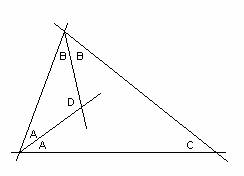

|
Para el aula Problema 269 Ejemplos de problemas que plantean tareas ricas ¿Podrías construir un triángulo con sus dos bisectrices
perpendiculares? Vila, A., Callejo, M,L. (2004):
Matemáticas para aprender a pensar Nacea (pág 136), Con permiso de los autores, a quines el director agradece
la gentileza. |
Solución de Maite Peña Alcaraz, estudiante de Industriales
en
:

Supongamos que se puede construir. Entonces, sabemos
que se cumple que:
lo
cual es imposible por lo que no existe.